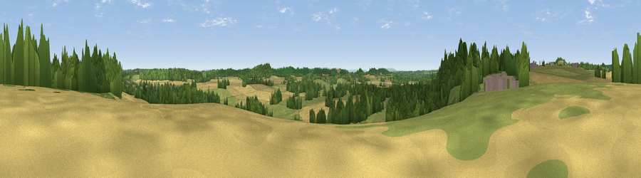

Viewpoint near Aston Cantlow
#29679 in England · top 62% of its area beats it · near Aston Cantlow · access?Where it is
The exact computed spot (SP 12775 59875). Click the marker for map links.
Public access: no public right of way or access land is recorded at this exact spot — it may be on private land. Computed from Natural England's CRoW access layer and OpenStreetMap rights of way — not the legal definitive map. Always verify locally.
The view, rendered

A 360° render of this exact spot computed from the terrain model, tree cover and land cover — summer colours, afternoon light, calibrated against photographs of famous viewpoints. Real trees, hedges and buildings will differ in detail.
The panorama
Grey silhouette: terrain skyline in each direction (720 bearings, Earth curvature and refraction included). Dashed green: skyline with trees (+15 m) and buildings (+8 m) as obstacles. Blue strip: how far the ground is visible on each bearing.
Where the view opens
Wedge length = distance to the farthest visible ground on that bearing (vegetation-aware). Rings at 10, 25 and 50 km.
What fills the view
39% grassland · 35% cropland · 24% woodland · 1% built-up
Angular shares of the visible panorama (visual magnitude), not map area. Landscape diversity 0.49 (0–1 Shannon).
Key numbers
More beautiful places nearby
The staircase of upgrades: each row has a higher view potential than everything closer. Driving times are estimates from straight-line distance, calibrated against real road routing — check an actual route before setting out.
| Place | Direction | Drive | Score |
|---|---|---|---|
| Lodge Hill | NW · 2 km | ~6 min | 64.0 |
| Viewpoint near Meon Vale | SSE · 15 km | ~27 min | 77.0 |
| Broadway Hill | S · 24 km | ~39 min | 77.7 |
| Viewpoint near Elmley Castle | SW · 25 km | ~41 min | 80.5 |
| Bredon Hill | SW · 26 km | ~42 min | 83.0 |
| Viewpoint near Great Witley | W · 38 km | ~57 min | 83.4 |
| North Hill | WSW · 38 km | ~57 min | 86.8 |
| Worcestershire Beacon | WSW · 39 km | ~58 min | 87.1 |
52.23692, -1.81435 · source: screening · position refined by local search. Computed location — check access rights before visiting.